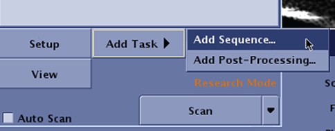
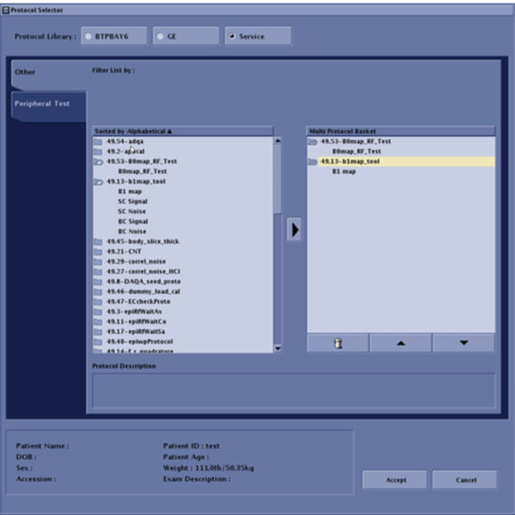
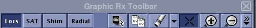
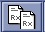
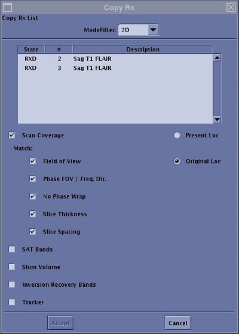
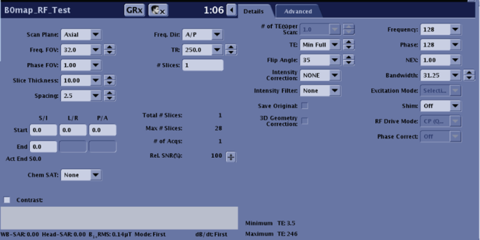
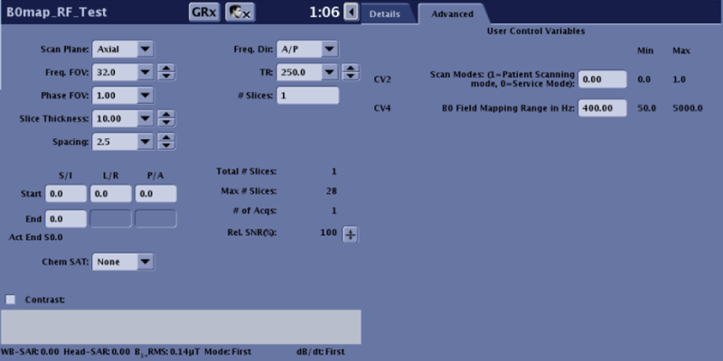
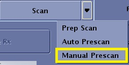
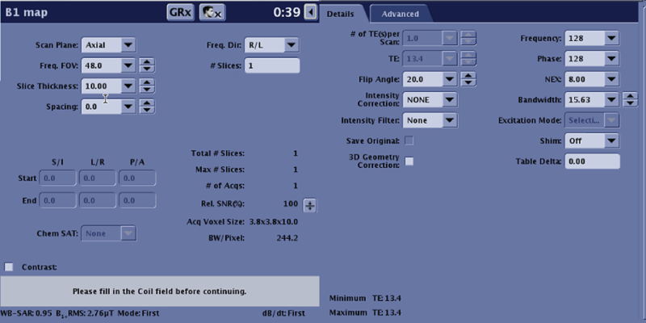

- Object ID: 00000018WIA30DA20A0GYZ
- Topic ID: id_2039880 Version: 1.21
- Date: Sep 11, 2025 5:49:12 AM
B0 B1 Map Troubleshooting Guide
When you find shadings in the image, please follow the procedure below and setup B0 map and B1 map protocols.
About this task
Note B0 map and B1 map protocols can be used on patients.
Load B0 and B1 map for software version MR30 and later
Procedure
- Select the active scan session tab.
- From Scan/Task panel, click Add Task > Add Sequence.
Figure 1. Add Sequence screen 
- From the Protocol screen, select Service protocol library.
- Click the protocol folder (B0map_RF_Test, b1map_tool).
- Click B0map_RF_Test,and then click the to send the protocol to the Multi Protocol Basket.
- Click B1 map,and then click the to send the protocol to the Multi Protocol Basket.
Figure 2. Loading B0,B1 map protocol 
- Click Accept.
- Copy the graphic prescriptions from original series to B0/B1map series.
- Click the icon to open the Graphic Rx toolbar.
Figure 3. Example of a Graphic Rx toolbar 
- From Graphic Rx toolbar, Click the

icon to open the Copy Rx screenFigure 4. Example of Copy Rx screen 
- Select Mode Filter, select All.
- Click the desired series (B0map_RF_Test or B1 map) from the Series List window.
- Click Original Loc.
- Click Accept.
- Regardless of the viewport active or the images displayed in the viewports, the system displays the original localizer in the original active viewport and posts the graphic lines.
- Click the icon to open the Graphic Rx toolbar.
- Edit the B0map_RF_Test scan parameters.
- Click the to show the details and advanced tab.
- On details tab, review and edit the parameter as below:
Table 1. B0map_RF_Test parameters on details tab Parameter Value Note Scan Plane Same as Clinical scan parameter setting - Freq.FOV Same as Clinical scan parameter setting - Phase FOV Same as Clinical scan parameter setting - Slice Thickness Same as Clinical scan parameter setting - Spacing Same as Clinical scan parameter setting - Freq. Dir Same as Clinical scan parameter setting - TR Same as Clinical scan parameter setting - TE Min Full - Loc Before Pause 0 If have setting the value to "0" Flip Angle 20 - Frequency 128 - Phase 128 - NEX 1.00 - Bandwidth 31.25 - Figure 5. Example of B0map_RF_Test parameters on details tab 
- On advanced tab, review and edit the parameter as below:
Table 2. B0map_RF_Test parameters on advanced tab Scan parameter Value Scan Modes (1= Patient Scanning mode, 0= Service Mode) 1 B0 Field Mapping Range in Hz 220 Figure 6. Example of B0map_RF_Test parameters on advanced tab 
- On Scan button, select Manual Prescan from the scan menu. Make sure the parameters used are same with the protocol in the clinical scan.
Figure 7. Scan menu 
- Click Scan to begin the acquisition.
- Edit the B1 map scan parameters.
- Click the to show the details and advanced tab.
- On details tab, review and edit the parameter as below:
Table 3. B1 map parameters on details tab Parameter Value Note Scan Plane Same as Clinical scan parameter setting - Freq.FOV Same as Clinical scan parameter setting - Phase FOV Same as Clinical scan parameter setting - Slice Thickness Same as Clinical scan parameter setting - Spacing Same as Clinical scan parameter setting - Freq. Dir Same as Clinical scan parameter setting - TR Same as Clinical scan parameter setting - TE Same as Clinical scan parameter setting - Loc Before Pause 0 If have setting the value to "0" Flip Angle 20 - Frequency 128 - Phase 128 - NEX 1.00 - Bandwidth 31.25 - Figure 8. Example of B1 map parameters on details tab 
- On Scan button, select Manual Prescan from the scan menu. Make sure the parameters used are same with the protocol in the clinical scan.
Figure 9. Scan menu - Click Scan to begin the acquisition.